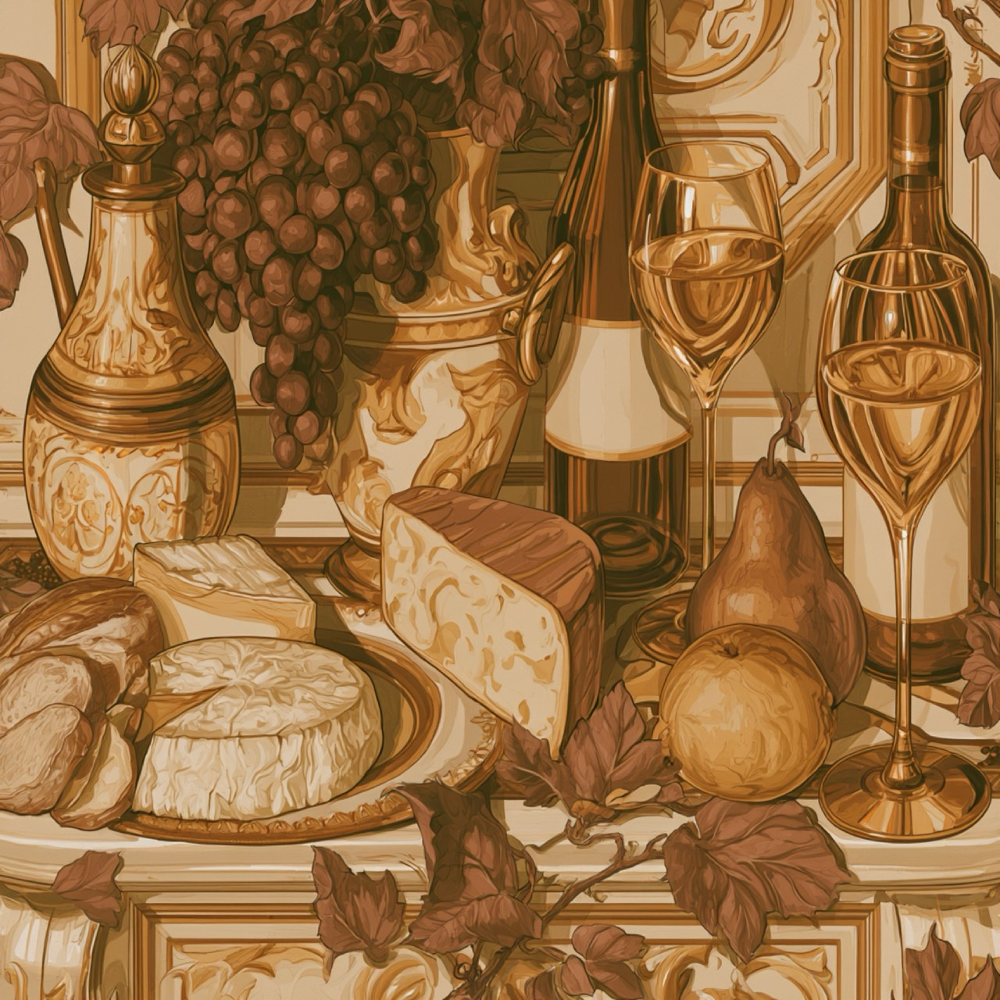
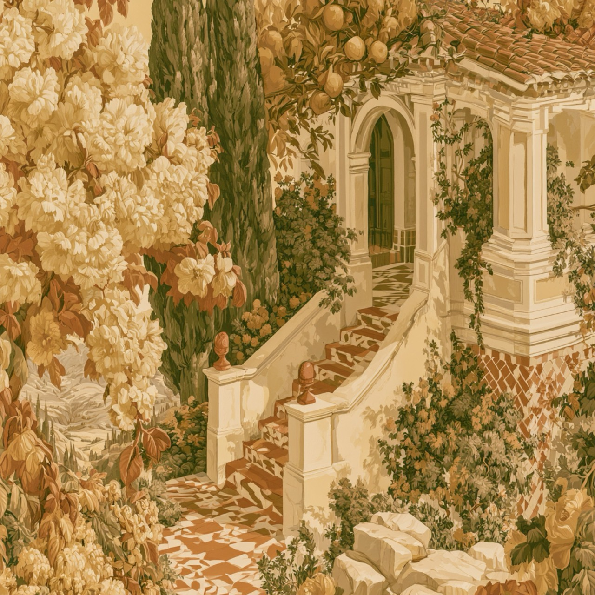
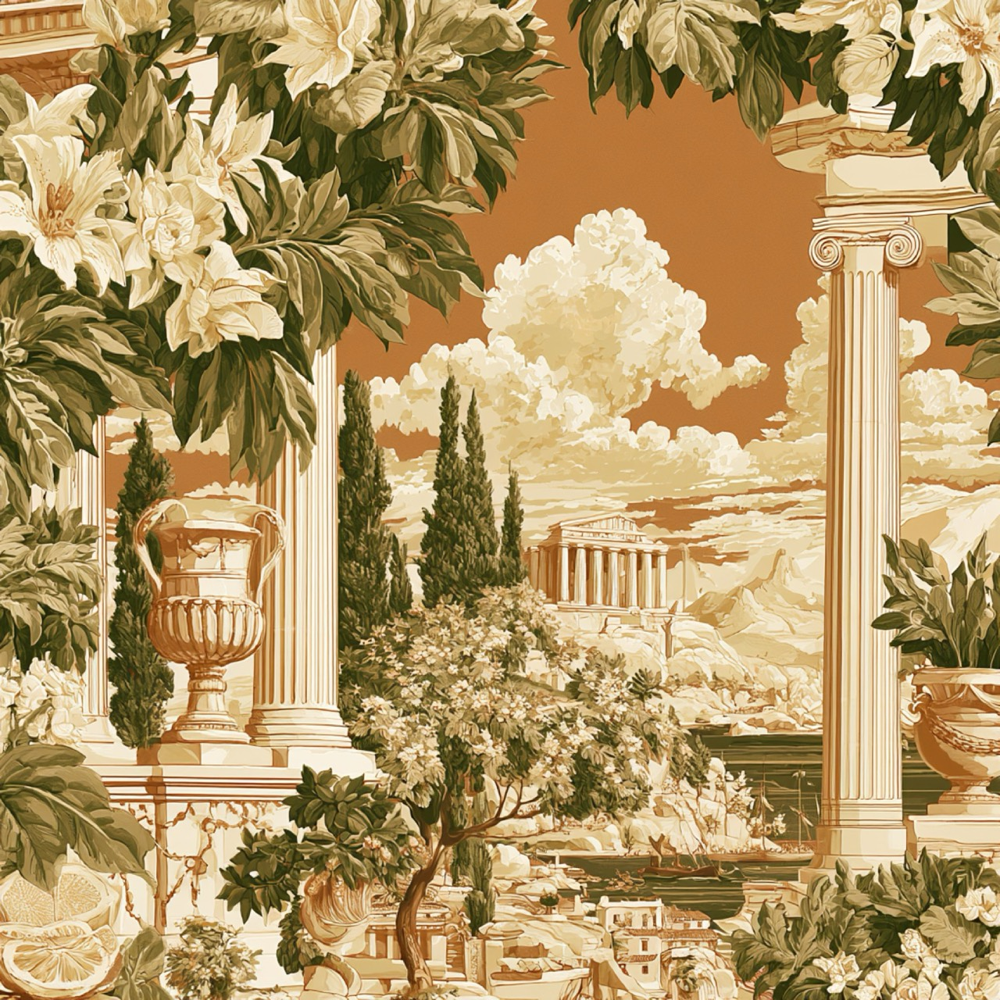
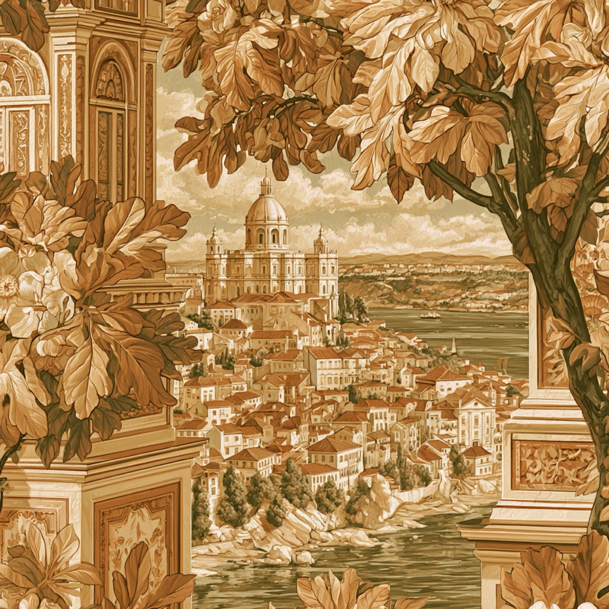
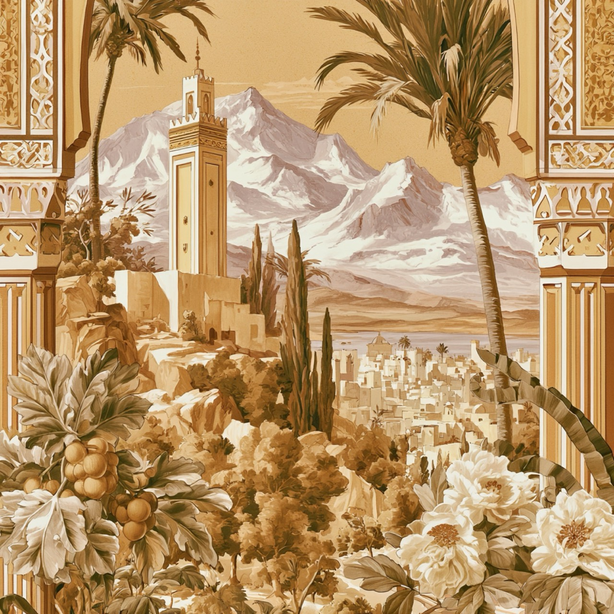

Kies je wereld. Er is er precies één van elk.
Per wereld is er één partner: jouw merk draagt de bar, het verhaal en de signature serve. Wie eerst komt, kiest eerst.
En naast de aperitief heeft elke wereld een bier én een bord: van Estrella Damm tot Casablanca, van cicchetti tot meze. Dus per wereld is er ook plek voor een bierpartner en een foodpartner, elk met een eigen plek aan de bar en in de tijdlijn.
 Beschikbaar
BeschikbaarItalië
Negroni & Spritz met Select. Het aperitivo als theater.

BeschikbaarFrankrijk
Pastis, één op vijf. De grens tussen dag en leven.

BeschikbaarSpanje
Vermut uit het vat, met sifón. De drank van opa, nu van iedereen.

BeschikbaarDe anijsgordel
Ouzo & arak, melkwit geslagen. Het meest gefilmde moment van de dag.

BeschikbaarPortugal
Portonico, ijskoud met munt. Het best bewaarde geheim van Porto.

BeschikbaarMarokko
Atay, van dertig centimeter hoog. Volledig alcoholvrij, vol programma.